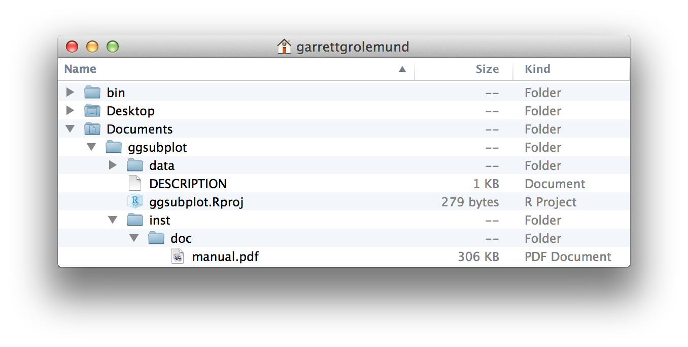
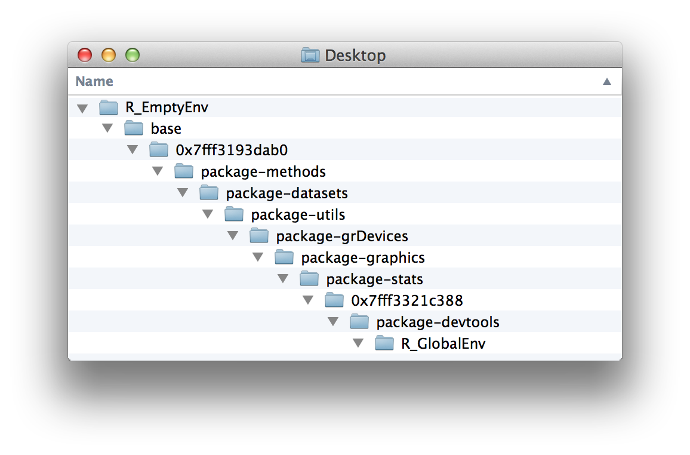
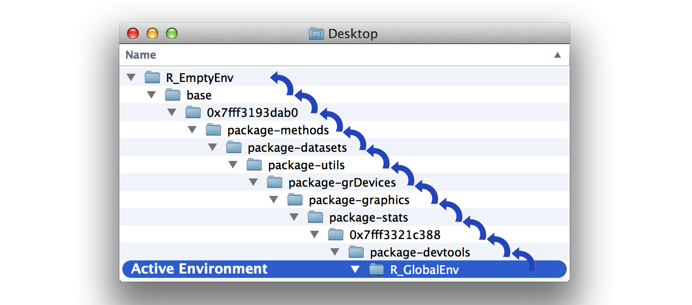
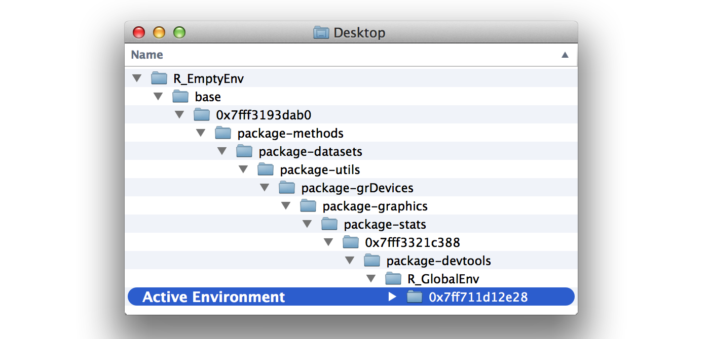
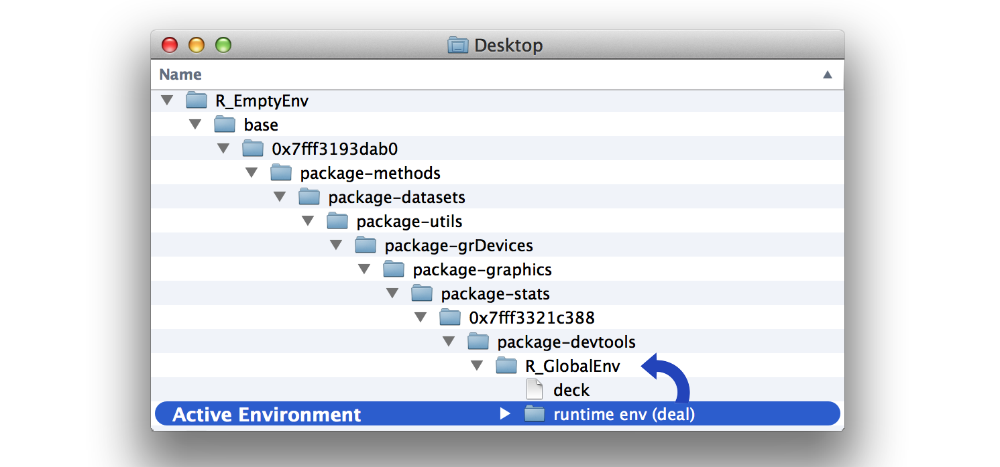
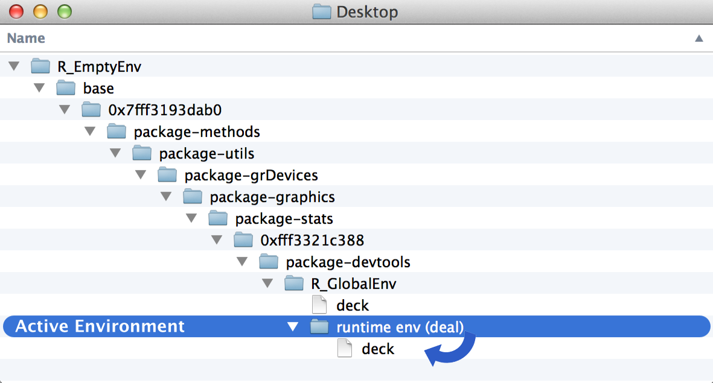
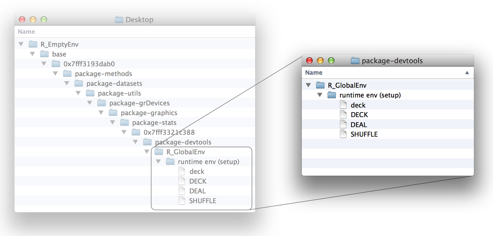
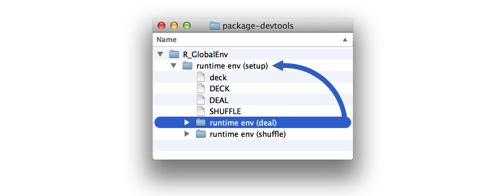
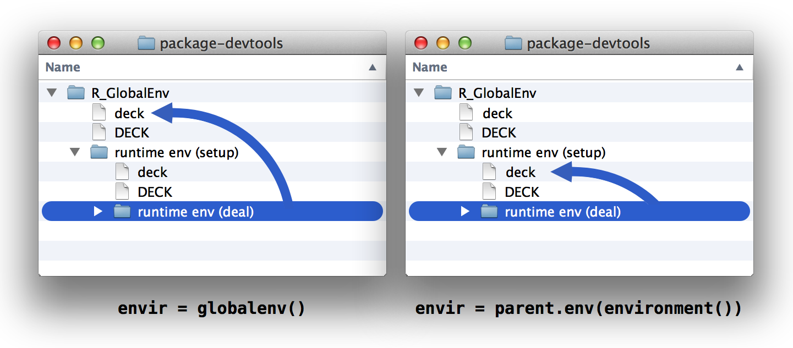

7 環境 (Environments)
デッキの準備が整い、ブラックジャック（あるいはハーツやウォー）をプレイする準備ができました。しかし、あなたの shuffle（シャッフル）関数と deal（配る）関数は十分な出来でしょうか？残念ながらそうではありません。例えば、deal は何度も同じカードを配ってしまいます。
deal(deck)
## face suit value
## king spades 13
deal(deck)
## face suit value
## king spades 13
deal(deck)
## face suit value
## king spades 13そして、shuffle 関数は実際には deck 自体をシャッフルしていません（シャッフルされた deck のコピーを返しているだけです）。要するに、どちらの関数も deck を使用していますが、どちらも deck を操作していません。私たちはこれらに deck を操作してほしいと考えています。
これらの関数を修正するには、Rが deck のようなオブジェクトをどのように保存し、探し出し、操作するのかを学ぶ必要があります。Rはこれらすべてを「環境 (Environment)」システムを利用して行います。
7.1 環境 (Environments)
コンピュータがファイルをどのように保存しているか考えてみてください。すべてのファイルはフォルダに保存され、各フォルダは別のフォルダに保存され、階層的なファイルシステムを形成しています。コンピュータがファイルを開こうとする場合、まずこのファイルシステムの中でファイルを探す必要があります。
Finderなどのウィンドウを開くと、ファイルシステムを確認できます。例えば、Figure 7.1 は私のコンピュータのファイルシステムの一部を示しています。膨大な数のフォルダがあります。その中の一つに Documents というサブフォルダがあり、その中に ggsubplot というサブフォルダがあり、さらにその中に inst、doc と続き、最後に manual.pdf というファイルがあります。
Rも同様のシステムを使用してRオブジェクトを保存します。各オブジェクトは「環境 (Environment)」の中に保存されます。これはコンピュータ上のフォルダに似た、リストのようなオブジェクトです。各環境は「親環境 (Parent environment)」（一つ上の階層の環境）に接続されており、環境の階層構造を形成しています。
pryr パッケージの parenvs 関数（注：この本が最初に出版された際、parenvs は pryr パッケージに含まれていました）を使用して、Rの環境システムを確認できます。parenvs(all = TRUE) は、現在のRセッションで使用されている環境のリストを返します。実際の出力は、ロードされているパッケージによってセッションごとに異なります。以下は私の現在のセッションの出力です。
library(pryr)
parenvs(all = TRUE)
## label name
## 1 <environment: R_GlobalEnv> ""
## 2 <environment: package:pryr> "package:pryr"
## 3 <environment: 0x7fff3321c388> "tools:rstudio"
## 4 <environment: package:stats> "package:stats"
## 5 <environment: package:graphics> "package:graphics"
## 6 <environment: package:grDevices> "package:grDevices"
## 7 <environment: package:utils> "package:utils"
## 8 <environment: package:datasets> "package:datasets"
## 9 <environment: package:methods> "package:methods"
## 10 <environment: 0x7fff3193dab0> "Autoloads"
## 11 <environment: base> ""
## 12 <environment: R_EmptyEnv> ""この出力を解釈するには少し想像力が必要です。そこで、環境をフォルダのシステムとして可視化してみましょう（Figure 7.2）。環境ツリーは次のように考えることができます。最も低いレベルの環境は R_GlobalEnv という名前で、package:pryr という環境の中に保存され、それがさらに 0x7fff3321c388 という環境の中に保存され……というように続き、最終的に最高レベルの環境である R_EmptyEnv に到達します。R_EmptyEnv は、親環境を持たない唯一のR環境です。

これはあくまで比喩であることを忘れないでください。Rの環境はRAMメモリ上に存在し、ファイルシステム上に存在するわけではありません。また、Rの環境は技術的に「お互いの中に」保存されているわけではありません。各環境が親環境に接続されているため、Rの環境ツリーを上に辿って検索することが容易になっています。しかし、この接続は一方通行です。ある環境を見て、その「子」が何であるかを知る方法はありません。つまり、Rの環境ツリーを下に辿って検索することはできません。しかし他の点では、Rの環境システムはファイルシステムと非常によく似た働きをします。
7.2 環境の操作
Rには、環境ツリーを探索するために使用できるいくつかのヘルパー関数が備わっています。まず、as.environment を使用してツリー内の任意の環境を参照できます。as.environment は、環境名（文字列として）を受け取り、対応する環境を返します。
as.environment("package:stats")
## <environment: package:stats>
## attr(,"name")
## [1] "package:stats"
## attr(,"path")
## [1] "/Library/Frameworks/R.framework/Versions/3.0/Resources/library/stats"ツリー内の3つの環境には、それぞれ専用のアクセサ関数があります。これらは、グローバル環境 (R_GlobalEnv)、ベース環境 (base)、および空環境 (R_EmptyEnv) です。これらは次のように参照できます。
globalenv()
## <environment: R_GlobalEnv>
baseenv()
## <environment: base>
emptyenv()
##<environment: R_EmptyEnv>次に、parent.env を使用して、ある環境の親を調べることができます。
parent.env(globalenv())
## <environment: package:pryr>
## attr(,"name")
## [1] "package:pryr"
## attr(,"path")
## [1] "/Library/Frameworks/R.framework/Versions/3.0/Resources/library/pryr"空環境が、親を持たない唯一のR環境であることに注目してください。
parent.env(emptyenv())
## Error in parent.env(emptyenv()) : the empty environment has no parentls または ls.str を使用して、環境に保存されているオブジェクトを表示できます。ls はオブジェクト名のみを返しますが、ls.str は各オブジェクトの構造についても少し表示します。
ls(emptyenv())
## character(0)
ls(globalenv())
## "deal" "deck" "deck2" "deck3" "deck4" "deck5"
## "die" "gender" "hand" "lst" "mat" "mil"
## "new" "now" "shuffle" "vec"空環境は――驚くことではありませんが――空です。ベース環境には多すぎてここではリストアップできないほどのオブジェクトがあります。そしてグローバル環境には、いくつか見覚えのある顔があります。ここは、あなたがこれまでに作成したすべてのオブジェクトがRによって保存されている場所です。
Tip
RStudioの環境ペインには、グローバル環境内のすべてのオブジェクトが表示されます。
Rの $ 構文を使用して、特定の環境内のオブジェクトにアクセスできます。例えば、グローバル環境から deck にアクセスできます。
head(globalenv()$deck, 3)
## face suit value
## king spades 13
## queen spades 12
## jack spades 11また、assign 関数を使用して、オブジェクトを特定の環境に保存できます。まず assign に新しいオブジェクトの名前（文字列として）を与え、次にその値を、最後に保存先の環境を与えます。
assign("new", "Hello Global", envir = globalenv())
globalenv()$new
## "Hello Global"assign が <- と同様に機能することに注目してください。指定した環境に同じ名前のオブジェクトがすでに存在する場合、assign は許可を求めることなくそれを上書きします。これにより assign はオブジェクトの更新に便利ですが、心痛の原因になる可能性も秘めています。
環境ツリーを探索できるようになったところで、Rがそれをどのように使用しているかを調べてみましょう。Rは環境ツリーと密接に連携して、オブジェクトの検索、オブジェクトの保存、および関数の評価を行います。Rがこれらの各タスクをどのように行うかは、現在の「アクティブな環境」によって決まります。
7.2.1 アクティブな環境
いかなる瞬間においても、Rは単一の環境と密接に連携しています。Rは（新しく作成された場合）この環境にオブジェクトを保存し、（呼び出された場合）この環境を起点として既存のオブジェクトを検索します。この特別な環境を「アクティブな環境 (Active environment)」と呼ぶことにします。アクティブな環境は通常グローバル環境ですが、関数を実行する際には変化することがあります。
environment を使用して、現在のアクティブな環境を確認できます。
environment()
<environment: R_GlobalEnv>グローバル環境はRにおいて特別な役割を果たします。これは、コマンドラインで実行するすべてのコマンドにとってのアクティブな環境です。その結果、コマンドラインで作成したオブジェクトはすべてグローバル環境に保存されます。グローバル環境は、あなたのユーザーワークスペース（作業領域）と考えることができます。
コマンドラインでオブジェクトを呼び出すと、Rはまずグローバル環境でそのオブジェクトを探します。しかし、そこにない場合はどうなるでしょうか？その場合、Rは一連の規則に従ってオブジェクトを検索します。
7.3 スコープ規則 (Scoping Rules)
Rはオブジェクトを検索するために、特別な規則セットに従います。これらはRの「スコープ規則 (Scoping Rules)」として知られており、あなたはすでにそのうちのいくつかに出会っています。
- Rは現在のアクティブな環境でオブジェクトを探す。
- コマンドラインで作業する場合、アクティブな環境はグローバル環境である。したがって、コマンドラインで呼び出すオブジェクトはグローバル環境で検索される。
さらに、アクティブな環境にオブジェクトが見つからない場合にどうなるかを説明する3番目の規則があります。
- Rがある環境でオブジェクトを見つけられない場合、Rはその環境の親環境を探し、次に親の親を探し……というように、オブジェクトが見つかるか空環境に到達するまで繰り返す。
したがって、コマンドラインでオブジェクトを呼び出すと、Rはグローバル環境を探します。そこで見つからない場合、Rはグローバル環境の親を探し、さらにその親を探し、というように、オブジェクトが見つかるまで環境ツリーを上に辿っていきます（Figure 7.3 参照）。どの環境にもオブジェクトが見つからない場合、Rはオブジェクトが見つからないというエラーを返します。

Tip
関数もRにおけるオブジェクトの一種であることを思い出してください。Rは関数も他のオブジェクトと同様に、環境ツリーを名前で検索することで保存・検索します。
7.4 代入 (Assignment)
オブジェクトに値を代入すると、Rはアクティブな環境にそのオブジェクト名で値を保存します。アクティブな環境に同じ名前のオブジェクトがすでに存在する場合、Rはそれを上書きします。
例えば、グローバル環境に new というオブジェクトが存在するとします。
new
## "Hello Global"次のコマンドで、new という名前の新しいオブジェクトをグローバル環境に保存できます。その結果、Rは古いオブジェクトを上書きします。
new <- "Hello Active"
new
## "Hello Active"この仕組みは、Rが関数を実行するたびにジレンマを引き起こします。多くの関数は、その仕事を遂行するために一時的なオブジェクトを保存します。例えば、「プロジェクト1：重み付けされたサイコロ」の roll 関数は、die と dice というオブジェクトを保存していました。
roll <- function() {
die <- 1:6
dice <- sample(die, size = 2, replace = TRUE)
sum(dice)
}Rはこれらのテンポラリオブジェクトをアクティブな環境に保存しなければなりませんが、もしそうすると、既存のオブジェクトを上書きしてしまう可能性があります。関数の作成者は、あなたのアクティブな環境にどの名前がすでに存在するかを事前に予測することはできません。Rはこのリスクをどのように回避しているのでしょうか？Rは、関数を評価するたびに、そのための新しいアクティブな環境を作成します。
7.5 評価 (Evaluation)
Rは、関数を評価するたびに新しい環境を作成します。Rはこの新しい環境を、関数の実行中のアクティブな環境として使用し、実行が終わると関数を呼び出した元の環境に結果を持って戻ります。これらの新しい環境を「実行時環境 (Runtime environment)」と呼ぶことにしましょう。Rが実行時に関数を評価するために作成するからです。
Rの実行時環境を探索するために、次の関数を使用してみましょう。私たちは、その環境がどのような見た目か、親環境はどこか、どのようなオブジェクトが含まれているかを知りたいと考えています。show_env はそれを教えてくれるように設計されています。
show_env <- function(){
list(ran.in = environment(),
parent = parent.env(environment()),
objects = ls.str(environment()))
}show_env 自体も関数ですので、show_env() を呼び出すと、Rはそれを評価するための実行時環境を作成します。show_env の結果は、その実行時環境の名前、親、および含まれるオブジェクトを教えてくれます。
show_env()
## $ran.in
## <environment: 0x7ff711d12e28>
##
## $parent
## <environment: R_GlobalEnv>
##
## $objects結果から、Rが show_env() を実行するために 0x7ff711d12e28 という名前の新しい環境を作成したことがわかります。その環境にはオブジェクトはなく、その親は global environment（グローバル環境）でした。したがって、show_env の実行に関しては、Rの環境ツリーは Figure 7.4 のようになっていました。
もう一度 show_env を実行してみましょう。
show_env()
## $ran.in
## <environment: 0x7ff715f49808>
##
## $parent
## <environment: R_GlobalEnv>
##
## $objects今回は、show_env は新しい環境 0x7ff715f49808 で実行されました。Rは関数を実行するたびに新しい環境を作成します。0x7ff715f49808 環境は 0x7ff711d12e28 と全く同じように見えます。空であり、同じグローバル環境を親として持っています。

次に、Rがどの環境を実行時環境の親として使用するかを考えてみましょう。
Rは、関数の実行時環境を、その関数が最初に作成された環境に接続します。この環境は関数の生涯において重要な役割を果たします。なぜなら、その関数のすべての実行時環境が、それを親として使用するからです。この環境を「起点環境 (Origin environment)」と呼ぶことにしましょう。関数に対して environment を実行することで、その関数の起点環境を調べることができます。
environment(show_env)
## <environment: R_GlobalEnv>show_env の起点環境はグローバル環境です。なぜなら、私たちはコマンドラインで show_env を作成したからです。しかし、起点環境が必ずしもグローバル環境である必要はありません。例えば、parenvs の環境は pryr パッケージです。
environment(parenvs)
## <environment: namespace:pryr>言い換えれば、実行時環境の親は常にグローバル環境であるとは限りません。それは、その関数が最初に定義された環境になります。
最後に、実行時環境に含まれるオブジェクトを見てみましょう。現時点では、show_env の実行時環境にはオブジェクトが含まれていませんが、これを修正するのは簡単です。show_env のコード本体の中でいくつかオブジェクトを作成させるだけです。Rは show_env によって作成されたすべてのオブジェクトを実行時環境に保存します。なぜなら、それらのオブジェクトが作成される際、実行時環境がアクティブな環境になっているからです。
show_env <- function(){
a <- 1
b <- 2
c <- 3
list(ran.in = environment(),
parent = parent.env(environment()),
objects = ls.str(environment()))
}今度は show_env を実行すると、Rは a, b, c を実行時環境に保存します。
show_env()
## $ran.in
## <environment: 0x7ff712312cd0>
##
## $parent
## <environment: R_GlobalEnv>
##
## $objects
## a : num 1
## b : num 2
## c : num 3このようにして、Rは関数が上書きすべきでないものを上書きしないように保証しています。関数によって作成されたオブジェクトは、安全で邪魔にならない実行時環境に保存されます。
Rはまた、実行時環境に2番目のタイプのオブジェクトを配置します。関数に引数がある場合、Rは各引数を実行時環境にコピーします。引数は、引数名と同じ名前を持ち、ユーザーが引数に提供した値と同じ値を持つオブジェクトとして現れます。これにより、関数が各引数を見つけて使用できるようになります。
foo <- "take me to your runtime"
show_env <- function(x = foo){
list(ran.in = environment(),
parent = parent.env(environment()),
objects = ls.str(environment()))
}
show_env()
## $ran.in
## <environment: 0x7ff712398958>
##
## $parent
## <environment: R_GlobalEnv>
##
## $objects
## x : chr "take me to your runtime"これらすべてを組み合わせて、Rがどのように関数を評価するかを見てみましょう。関数を呼び出す前、Rは「呼び出し環境 (Calling environment)」と呼ばれるアクティブな環境で作業しています。これは、関数を呼び出した環境のことです。
その後、あなたが関数を呼び出します。Rはそれに応えて新しい実行時環境をセットアップします。この環境は、その関数の起点環境の子となります。Rは関数の各引数を実行時環境にコピーし、その後、実行時環境を新しいアクティブな環境にします。
次に、Rは関数の本体にあるコードを実行します。コードがオブジェクトを作成する場合、Rはそれをアクティブな（つまり実行時の）環境に保存します。コードがオブジェクトを呼び出す場合、Rはそのスコープ規則を使用してそれらを検索します。Rは実行時環境を検索し、次に実行時環境の親（これは起点環境になります）、さらに起点環境の親、というように検索していきます。呼び出し環境は検索パス上にない可能性があることに注意してください。通常、関数は引数のみを呼び出し、Rはそれらを実行中のアクティブな環境で見つけることができます。
最後に、Rは関数の実行を終了します。アクティブな環境を呼び出し環境に戻します。これで、Rは関数を呼び出したコード行にある他のすべてのコマンドを実行します。したがって、関数の結果を <- でオブジェクトに保存する場合、その新しいオブジェクトは呼び出し環境に保存されます。
まとめると、Rはオブジェクトを環境システムに保存します。いかなる瞬間においても、Rは単一のアクティブな環境と密接に連携しています。新しいオブジェクトはその環境に保存され、既存のオブジェクトを探す際にはその環境を起点とします。Rのアクティブな環境は通常グローバル環境ですが、Rは関数を安全に実行するなどの目的のためにアクティブな環境を調整します。
この知識を、deal 関数と shuffle 関数の修正にどのように活かせるでしょうか？
まず、ウォーミングアップの質問から始めましょう。次のようにコマンドラインで deal を再定義したとします。
deal <- function() {
deck[1, ]
}この deal は引数を取らず、グローバル環境にある deck オブジェクトを呼び出すことに注目してください。
練習問題：dealは動作するか？
新しいバージョンの
dealをdeal()のように呼び出したとき、Rはdeckを見つけて結果を返すことができるでしょうか？
解答例 はい、
dealは以前と同様に動作します。Rはdealを、グローバル環境の子である実行時環境で実行します。なぜグローバル環境の子になるのでしょうか？それは、私たちがdealをグローバル環境で定義したため、グローバル環境がdealの起点環境になるからです。environment(deal) ## <environment: R_GlobalEnv>
deal が deck を呼び出すと、Rは deck オブジェクトを検索する必要があります。Rのスコープ規則により、Figure 7.5 に示すように、グローバル環境にある deck に辿り着きます。その結果、deal は期待通りに動作します。
deal()
## face suit value
## king spades 13
では、配ったカードを deck から削除するように deal 関数を修正しましょう。今の deal は deck の一番上のカードを返しますが、デッキからカードを削除することはありません。その結果、deal は常に同じカードを返します。
deal()
## face suit value
## king spades 13
deal()
## face suit value
## king spades 13あなたはすでに、deck の一番上のカードを削除するためのRの構文を知っています。次のコードは、deck のそのままのコピーを保存し、その後、一番上のカードを削除します。
DECK <- deck
deck <- deck[-1, ]
head(deck, 3)
## face suit value
## queen spades 12
## jack spades 11
## ten spades 10これを deal に追加してみましょう。ここでは、deal は deck の一番上のカードを保存し（そして最終的に返し）ます。その間に、deck からカードを削除します……。本当にそうなるでしょうか？
deal <- function() {
card <- deck[1, ]
deck <- deck[-1, ]
card
}このコードはうまく機能しません。なぜなら、Rが deck <- deck[-1, ] を実行する際、Rは実行時環境にいるからです。グローバルな deck を deck[-1, ] で上書きする代わりに、deal は実行時環境の中に、少し変更された deck のコピーを作成するだけです（Figure 7.6 参照）。

練習問題：deckを上書きする
dealのdeck <- deck[-1, ]の行を書き換えて、グローバル環境のdeckという名前のオブジェクトにdeck[-1, ]を代入するようにしてください。ヒント：assign関数を検討してください。
解答例
assign関数を使用すれば、オブジェクトを特定の環境に代入できます。deal <- function() { card <- deck[1, ] assign("deck", deck[-1, ], envir = globalenv()) card }
これで deal はようやくグローバルな deck をクリーンアップ（更新）するようになり、現実世界と同じようにカードを配ることができるようになります。
deal()
## face suit value
## queen spades 12
deal()
## face suit value
## jack spades 11
deal()
## face suit value
## ten spades 10次に、shuffle 関数に目を向けましょう。
shuffle <- function(cards) {
random <- sample(1:52, size = 52)
cards[random, ]
}shuffle(deck) は deck オブジェクト自体をシャッフルするのではなく、deck オブジェクトをシャッフルしたコピーを返します。
head(deck, 3)
## face suit value
## nine spades 9
## eight spades 8
## seven spades 7
a <- shuffle(deck)
head(deck, 3)
## face suit value
## nine spades 9
## eight spades 8
## seven spades 7
head(a, 3)
## face suit value
## ace diamonds 1
## seven clubs 7
## two clubs 2この挙動には2つの望ましくない点があります。第一に、shuffle が deck のシャッフルに失敗していること。第二に、shuffle が返すコピーには、すでに配られたカードが欠けている可能性があることです。shuffle が、配られたカードをデッキに戻してからシャッフルするようになれば、より良くなります。これは、現実世界でカードをシャッフルする際に起こることと同じです。
練習問題：shuffleを書き換える
グローバル環境にある
deckのコピーを、同じくグローバル環境にある完全なコピーであるDECKをシャッフルしたバージョンで置き換えるようにshuffleを書き換えてください。新しいバージョンのshuffleは引数を取らず、出力も返さないようにします。
解答例
deckを更新したのと同じ方法でshuffleを更新できます。次のバージョンがその役割を果たします。shuffle <- function(){ random <- sample(1:52, size = 52) assign("deck", DECK[random, ], envir = globalenv()) }
DECK は shuffle の起点環境であるグローバル環境に存在するため、shuffle は実行時に DECK を見つけることができます。Rはまず shuffle の実行時環境で DECK を探し、次に出発点であるグローバル環境（ここに DECK が保存されています）を探します。
shuffle の2行目は、DECK を並べ替えたコピーを作成し、それをグローバル環境に deck として保存します。これにより、以前のシャッフルされていないバージョンの deck が上書きされます。
7.6 クロージャ (Closures)
私たちのシステムはついに動作するようになりました。例えば、カードをシャッフルしてからブラックジャックの手札を配ることができます。
shuffle()
deal()
## face suit value
## queen hearts 12
deal()
## face suit value
## eight hearts 8しかし、このシステムは deck と DECK がグローバル環境に存在することを要求します。この環境では多くのことが行われるため、deck が誤って変更されたり削除されたりする可能性があります。
deck を、Rが関数を実行するために作成するような、安全で邪魔にならない場所に保存できればより良いでしょう。実際、deck を実行時環境に保存するのはそれほど悪いアイデアではありません。
deck を引数として受け取り、deck のコピーを DECK として保存する関数を作成できます。その関数はまた、独自の deal と shuffle のコピーを保存することもできます。
setup <- function(deck) {
DECK <- deck
DEAL <- function() {
card <- deck[1, ]
assign("deck", deck[-1, ], envir = globalenv())
card
}
SHUFFLE <- function(){
random <- sample(1:52, size = 52)
assign("deck", DECK[random, ], envir = globalenv())
}
}setup を実行すると、Rはこれらのオブジェクトを保存するための実行時環境を作成します。その環境は Figure 7.7 のようになります。
これで、これらすべてはグローバル環境の子である安全な場所に収まりました。しかし、これでは安全すぎて使いにくい状態です。setup に DEAL と SHUFFLE を返させて、私たちが使用できるようにしましょう。これを行う最善の方法は、関数をリストとして返すことです。
setup <- function(deck) {
DECK <- deck
DEAL <- function() {
card <- deck[1, ]
assign("deck", deck[-1, ], envir = globalenv())
card
}
SHUFFLE <- function(){
random <- sample(1:52, size = 52)
assign("deck", DECK[random, ], envir = globalenv())
}
list(deal = DEAL, shuffle = SHUFFLE)
}
cards <- setup(deck)
次に、リストの各要素をグローバル環境の専用オブジェクトに保存できます。
deal <- cards$deal
shuffle <- cards$shuffleこれで、以前と同様に deal と shuffle を実行できます。各オブジェクトには、元の deal および shuffle と同じコードが含まれています。
deal
## function() {
## card <- deck[1, ]
## assign("deck", deck[-1, ], envir = globalenv())
## card
## }
## <environment: 0x7ff7169c3390>
shuffle
## function(){
## random <- sample(1:52, size = 52)
## assign("deck", DECK[random, ], envir = globalenv())
## }
## <environment: 0x7ff7169c3390>ただし、関数には一つ重要な違いがあります。それらの起点環境はもはやグローバル環境ではありません（deal と shuffle は現在そこに保存されていますが）。それらの起点環境は、あなたが setup を実行したときにRが作成した実行時環境です。そこがRが DEAL と SHUFFLE を作成した場所であり、それが新しい deal と shuffle にコピーされたのです。
environment(deal)
## <environment: 0x7ff7169c3390>
environment(shuffle)
## <environment: 0x7ff7169c3390>なぜこれが重要なのでしょうか？なぜなら、今 deal や shuffle を実行すると、Rは 0x7ff7169c3390 を親として使用する実行時環境で関数を評価するからです。DECK と deck はこの親環境にあるため、deal と shuffle は実行時にそれらを見つけることができます。DECK と deck は関数の検索パス上にありますが、それ以外の点では邪魔にならない場所に置かれています（Figure 7.8 参照）。

この配置は「クロージャ (Closure)」と呼ばれます。setup の実行時環境が、deal 関数と shuffle 関数を「包囲 (Enclose)」しています。deal と shuffle の両方は包囲環境にあるオブジェクトと密接に連携できますが、それ以外のものはほとんど連携できません。包囲環境は、他のどのR関数や環境にとっても検索パス上にありません。
deal と shuffle が依然としてグローバル環境の deck オブジェクトを更新していることにお気づきかもしれません。心配しないでください、これからそれを変更します。私たちは、deal と shuffle がそれぞれの実行時環境の親（包囲）環境にあるオブジェクトのみを排他的に操作するようにしたいと考えています。各関数がグローバル環境を参照して deck を更新する代わりに、Figure 7.9 に示すように、実行時に親環境を参照するように変更できます。
setup <- function(deck) {
DECK <- deck
DEAL <- function() {
card <- deck[1, ]
assign("deck", deck[-1, ], envir = parent.env(environment()))
card
}
SHUFFLE <- function(){
random <- sample(1:52, size = 52)
assign("deck", DECK[random, ], envir = parent.env(environment()))
}
list(deal = DEAL, shuffle = SHUFFLE)
}
cards <- setup(deck)
deal <- cards$deal
shuffle <- cards$shuffle
ついに、自己完結型のカードゲームが完成しました。グローバルな deck のコピーを好きなだけ削除（または修正）しても、依然としてカードをプレイできます。deal と shuffle は、保護された清浄な deck のコピーを使用します。
rm(deck)
shuffle()
deal()
## face suit value
## ace hearts 1
deal()
## face suit value
## jack clubs 11ブラックジャック！
7.7 まとめ
Rはオブジェクトを、コンピュータのファイルシステムに似た環境システムに保存します。このシステムを理解すれば、Rがどのようにオブジェクトを検索するかを予測できます。コマンドラインでオブジェクトを呼び出すと、Rはグローバル環境でオブジェクトを探し、次にグローバル環境の親を探し、というように、環境ツリーを一つずつ上に辿って検索します。
関数の中からオブジェクトを呼び出す場合、Rは少し異なる検索パスを使用します。関数を実行すると、Rはコマンドを実行するための新しい環境を作成します。この環境は、その関数が最初に定義された環境の子になります。これはグローバル環境である場合もありますが、そうでない場合もあります。この挙動を利用して、保護された環境にあるオブジェクトにリンクされた関数である「クロージャ (Closure)」を作成できます。
Rの環境システムに慣れてくれば、今回のようにエレガントな結果を生み出すためにそれを利用できるようになります。しかし、環境システムを理解することの真の価値は、R関数がどのようにその仕事をしているかを知ることにあります。この知識を使えば、関数が期待通りに動作しないときに何が間違っているのかを突き止めることができます。
7.8 プロジェクト2のまとめ
これで、Rにロードするデータセットとその値を完全に制御できるようになりました。データをRオブジェクトとして保存し、データ値を自在に取得・操作し、さらにはRがコンピュータのメモリ内でオブジェクトをどのように保存・検索するかを予測することさえできます。
まだ気づいていないかもしれませんが、あなたの専門知識は、あなたを強力な「コンピュータによって拡張されたデータユーザー」にしています。Rを使用すれば、手作業では扱いきれないような大規模なデータセットを保存し、操作することができます。これまでは小さなデータセットである deck しか扱ってきませんでしたが、コンピュータのメモリに収まるあらゆるデータセットに対して、同じテクニックを使用できます。
しかし、データの保存は、データサイエンティストとして直面する唯一の物流タスクではありません。コンピュータなしでは困難なほど複雑、あるいは反復的なタスクをデータに対して行いたいと思うことがよくあるでしょう。既存のR関数やパッケージでできることもありますが、そうでないこともあります。コンピュータが従うべき独自のプログラムを書くことができれば、データサイエンティストとして最も多才になれます。Rはそれを助けてくれます。準備ができたら、「プロジェクト3：スロットマシン」で、Rでプログラムを書くための最も有用なスキルを学びましょう。